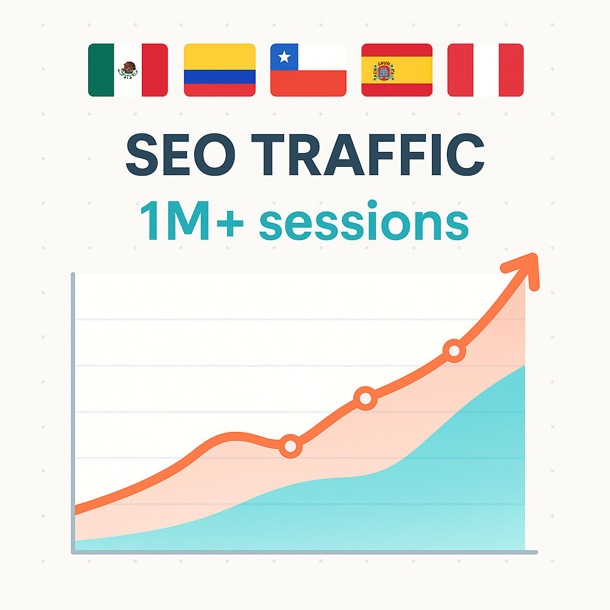

SEO Projects
Estudia Latam (MX, AR, CL, CO, PE, CR, PA)
Role: SEO Lead & Project Strategist (2016 – 2023)
Sites:
- 🇲🇽 mextudia.com (sold in 2016). Reached over 1.1M monthly visits (peak in Apr 2023)
- 🇦🇷 argentinaestudia.com (sold in 2023). +4.8M sessions total (peak: 663K in Aug 2023)
- 🇨🇱 chilestudia.com (sold in 2023). +1.35M sessions total (peak: 144K in Jan 2024)
- 🇨🇴 colombiaestudia.com (sold in 2023). +911K sessions total (peak: 193K in Jan 2024)
- 🇵🇪 estudiaperu.pe (sold in 2023). +1.04M sessions total (peak: 25K in Mar 2024)
- 🇨🇷 estudiacostarica.com. +132K sessions total (peak: 15K in Mar 2024)
- 🇵🇦 estudia-panama.com. +78K sessions total (peak: 7.8K in Apr 2024)
Overview:
- Developed, grew, and monetized a network of educational portals for Latin America and Spain.
- Led keyword strategy, content planning, technical SEO, and local/international SEO implementation.
- Each domain was fully optimized for search visibility, mobile performance, and structured data.
Tools: GA4, GSC, SEMrush, WordPress, Ubersuggest, Screaming Frog
Kidstudia (MX, PE, ES, CO, CL)
Role: SEO Strategist (2022 – 2024)

Sites:
- 🇲🇽 kidstudia.com. 3.3M sessions total – Peak: 508K (Jan 2023)
- 🇵🇪 kidstudia.pe. 1.6M sessions total – Peak: 84K (Mar 2023)
- 🇪🇸 kidstudia.es. Spain: 509K sessions total – Peak: 34K (Mar 2023)
- 🇨🇴 kidstudia.co. Colombia: 491K sessions total – Peak: 42K (Nov 2023)
- 🇨🇱 kidstudia.cl. Chile: 458K sessions total – Peak: 36K (Aug 2023)
Overview:
- Led SEO strategy across five localized domains of an edtech platform for school search.
- Developed international SEO practices (hreflang, site structure, performance tracking).
- Created content hubs and keyword targeting at country and city level.
Tools: GA4, GSC, Screaming Frog
Role: SEO Strategist & Marketing Lead (2022 – Present)
Site: segurealo.com
- 287,817 total sessions since launch
- Peak of 13,929 sessions in May 2024
Overview:
- SEO-first insurtech project focused on Mexican financial products (retirement plans, life and medical insurance).
- Responsible for full organic strategy: keyword research, technical optimization, and content clusters.
- Also involved in conversion funnel optimization, lead capture, and nurturing automation.
Tools: GA4, GSC, WordPress, Looker Studio, Ubersuggest